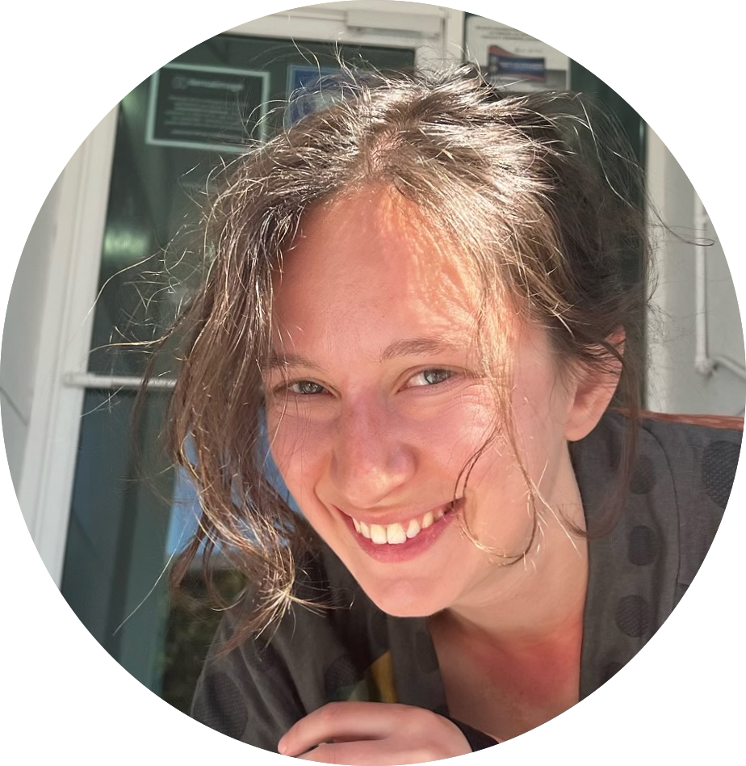

Ana Chkhaidze

About me
I am a PhD student in Cognitive Science at UC San Diego working with Lera Boroditsky, Anastasia Kiyonaga, and Seana Coulson. I'm from Georgia—the country, not the state. I try to spice up my scientific life with reading fiction, traveling the world (Mexico!), exploring (and photographing) architecture and conforming to California clichés by driving my convertible—my European, once strongly-against-cars, side is not happy.
I have degrees in Social Sciences, Biology and Neuroscience. Before starting my PhD in Cognitive Science, at different times, I studied schizophrenia, epilepsy, and visual perception, and I worked as a researcher, data scientist, and math teacher.
Research
I study what our thoughts are made of. Humans differ in how they experience their own thoughts. Some think they hear sentences in their “mind's ear” (verbalizers), others report seeing thoughts in their “mind’s eye” (visualizers), while some struggle to find the words to describe their inner world. Can we trust these subjective judgements? I am looking for neural fingerprints of these phenomenal differences. Internal representations allow us to travel through time and space, remember and recall memories, plan the future, solve problems, and perform a wide range of other cognitive tasks. Accounting for individual phenomenal, and physiological differences in types of internal representations people build has the potential to reshape our understanding of a host of functions. I am using behavioral, EEG, and fMRI and paradigms to tackle these question.
News
2024/10 Presented at The Embodied and Situated Language Processing Conference2024/06 Presented at The 18th European Workshop on Imagery and Cognition
2023/07 Presented at The Annual Conference of the Cognitive Science Society
2022/07 Presented at Multidisciplinary Approaches to Migration and Multilingualism
2022/10 Presented at The Annual Conference of the Cognitive Science Society
2022/06 Received The Kavli Foundation Grant for What Our Thoughts Are Made Of? (The role: PI, amount: $50,000)
2021/07 Presented at The Annual Conference of the Cognitive Science Society
2021/06 Presented at Approaches to Migration, Language and Identity
2020/10 Gave a talk at STEM-talks (in Georgian)
2020/10 Organized science symposium STEM-talks; 19 speakers from 6 different countries, ~100 participants
2020/09 Started teaching at Ilia State University
2020/09 Cofounded ISGS – International Society of Georgian Scientists, aiming to popularize science in Georgia
2020/04 Gave a guest lecture at the Free University of Tbilisi
2020/03 Gave a talk and presented a poster at CNS; Virtual Meeting
2020/03 Grant proposal rejected by UC-CARE fellowship
2020/03 Admitted as an instructor to Clubes de Ciencia; Ensenada, Mexico (CANCELED because of COVID-19)
2020/03 Will be giving a talk and presenting a poster at CNS; Boston, USA (CANCELED because of COVID-19)
2020/02 Was featured in Forbes Georgia 30 Under 30 in Science and Medicine category
2019/09 Wrote an article about language and human behavior for Marketer (in Georgian)
2019/08 Presented a poster poster at ECVP; Brussels, Belgium
2019/06 Gave a talk at BRAINstorming; Tbilisi, Georgia
2019/05 Gave an interview to Forbes Woman Georgia about the interaction between language and human mind
Publications
How “diagnostic” criteria interact to shape synesthetic behavior: the role of self-report and test-retest consistency in synesthesia research (OSF preprint)
Nicholas Root, Ana Chkhaidze et al. (2024)
Individual Differences in Preferred Thought Formats Predict Features of Narrative Recall (Proceedings of the Annual Meeting of the Cognitive Science Society)
Ana Chkhaidze et al. (2023)
Language-induced categorical perception of faces? (Proceedings of the Annual Meeting of the Cognitive Science Society)
Ana Chkhaidze and Lars Strother (2022)
Linguistic metaphors shape attitudes towards immigration (Proceedings of the Annual Meeting of the Cognitive Science Society)
Ana Chkhaidze, Parla Buyruk, Lera Boroditsky (2021)
Potassium current deficit in reticular thalamic cells causes epilepsy in SCN1A-deficient Dravet syndrome (Cell Reports)
Stefanie Makinson, ..., Ana Chkhaidze et al. (2019)
Catching up with wonderful women: The Women-are-wonderful effect is smaller in more gender egalitarian societies (International Journal of Psychology)
Kuba Krys, ..., Ana Chkhaidze et al. (2017)
Be careful where you smile: Culture shapes judgements of intelligence and honesty of smiling individuals (Journal of Nonverbal Behavior)
Kuba Krys, ..., Ana Chkhaidze et al. (2016)
Conferences & Talks
Visual imagery vividness predicts degree of embodied simulation during language comprehension. (Talk) The Embodied and Situated Language Processing Conference, Berlin, Germany (2024)
Visualizing the invisible: Visual imagery shapes pseudo-hallucinatory experiences. (Poster) The 18th European Workshop on Imagery and Cognition, Naples, Italy (2024)
Individual differences in preferred thought formats predict features of narrative recall. (Poster) The 45th Annual Meeting of the Cognitive Science Society, Sydney, Australia (2023)
Linguistic metaphors shape attitudes towards immigration. (Talk) Multidisciplinary Approaches to Migration and Multilingualism, Nicosia, Cyprus (2022)
Language induced categorical perception of faces? (Poster) The 45th Annual Meeting of the Cognitive Science Society, Toronto, Canada (2022)
Linguistic metaphors shape attitudes towards immigration. (Poster) The 44th Annual Meeting of the Cognitive Science Society (Virtual) (2021)
The battle of the hemispheres: opposite lateralization patterns for face recognition and gender processing. (Talk) Cognitive Neuroscience Society Meeting (Virtual) (2020)
Categorical perception of face identity and gender. (Poster) Cognitive Neuroscience Society Meeting (Virtual) (2020)
Categorical perception of faces and cerebral laterality. (Poster) The European Conference on Visual Perception, Leuven, Belgium. (2019)
A divided visual field approach to the categorical perception of faces. (Talk) BRAINstorming, Tbilisi, Georgia (2019)
Face recognition, linguistic categorization, and laterality. (Poster) Neuroscience Symposium at UNR, Reno, NV (2019)
The Role of Thalamus in Dravet Syndrome. (Talk) BRAINstorming, Tbilisi, Georgia (2017)
Are schizophrenia patients worse performers of dual-tasking? Insights from motor timing. (Poster) The European College of Neuropsychopharmacology Congress, Amsterdam, Netherlands. (2015)
Teaching
UCSD
COGS 1. Intro to Cognitive Science (Winter 2020, Fall 2020, Fall 2021, Spring 2023, Fall 2023, Winter 2024)
COGS 14A. Introduction to Research Methods (Winter 2021, Summer 2021, Summer 2024, Fall 2024)
COGS 14B. Introduction to Statistical Analysis (Summer 2020)
COGS 102A. Cognitive Perspectives (Summer 2020)
COGS 11. Minds and Brains (Spring 2020, Winter 2022, Spring 2024, Summer 2024)
Ilia State University
Cognitive Science (Fall 2020, Spring 2022)
Language and Cognition (Fall 2020)
University of Nevada, Reno
PSY 210. Statistical Methods (Spring 2018)
PSY 301. Experimental Psychology (Fall 2018, Spring 2019)
Free University of Tbilisi
PHYS 406020. Neuroscience (Fall 2017)